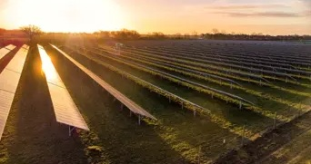

Sustainable Portfolio Review · 2025–26
Your investments, sustainably reviewed.
Prepared forOliver & Kate Hartley
1 May 2025 to 30 April 2026, from our Investment Consultant.
Diversified portfolios finished the twelve months ahead, but the path was uneven. Share markets were unsettled at times by changing expectations for interest rates, inflation and global trade, and leadership rotated between sectors rather than moving in one direction. Bonds were the steadier part of most portfolios, and cash paid a modest return: useful as a buffer, but well short of what growth assets are expected to earn over a long horizon.
For accumulators, the lesson of the year is a familiar one: staying invested, rebalancing when weights drift and keeping cash to a working level mattered more than reacting to headlines. We remain wary of high valuations in parts of the market, and continue to favour broad diversification over concentrated bets.
Illustrative commentary for this fictional example · it does not report actual market returnsOver the year Banksia Super returned 8.4% and Summit Edge 8.6% after fees (hypothetical figures, slide 6). Growth assets did most of the work.
The portfolio continues to reflect a Growth investment profile, consistent with your accumulation phase and longer-term investment horizon.
Summit Edge holds $26,962 in cash, and across both accounts international shares (40.0%) and cash (13.6%) sit above their agreed ranges.
Growth / defensive
Oliver’s Banksia Super plus your joint Summit Edge account
Oliver · DIY Mix, about 76% growth
Joint · share ETFs plus $26,962 cash
The agreed basis for investment decisions
The portfolio remains in a strong accumulation position. Banksia Super provides a diversified foundation, while Summit Edge gives you additional direct investment exposure and flexibility.
Your current holdings are not ESG-screened. This review covers the same accounts as your standard Portfolio Review and shows how this year’s changes could use screened funds instead, if you choose that option.
To Oliver’s 65 (he is 52)
Banksia Super and Summit Edge together, at the balance date.
| Investment account | Value · 1 May 2025 | Net cash flow | Investment gain | Value · 30 Apr 2026 | Return | Benchmark |
|---|---|---|---|---|---|---|
| Banksia Super | $282,185 | +$41,024 | +$26,449 | $349,658 | 8.4% | 9.2% |
| Summit Edge Investments | $91,314 | +$4,933 | +$8,064 | $104,311 | 8.6% | 9.0% |
| Combined portfolio | $373,499 | +$45,957 | +$34,513 | $453,969 | 8.4% | 9.2% |
Hypothetical illustration, not actual Banksia Super or Summit Edge returns. Simple Modified Dietz, after fees (super also after fund tax), before personal tax.
Target 75% growth / 25% defensive. On 30 April 2026 both accounts together held 75.6% growth; after the recommended changes, 74.7%.
| Asset class | Now | After | Target | Range |
|---|---|---|---|---|
| Australian shares | 35.6% | 38.7% | 35% | 30–40% |
| International shares | 40.0% | 33.8% | 30% | 25–35% |
| Property & infrastructure | 0.0% | 2.2% | 5% | 0–8% |
| Alternatives | 0.0% | 0.0% | 5% | 0–8% |
| Fixed interest | 10.8% | 15.4% | 15% | 10–18% |
| Cash | 13.6% | 9.9% | 10% | 7–13% |
International shares and cash (underlined) sit above their ranges: super leans international and Summit Edge holds idle cash. The changes on slide 11 bring every class back inside its range.
Banksia Super and Summit Edge, managed as one portfolio.
Oliver’s Banksia Super account is the portfolio’s main diversified base. Its 76% growth mix suits the Growth profile, but leans heavily to international shares.
Switch the DIY Mix to 39 / 33 / 18 / 10 (Aus / Intl / FI / Cash), bringing international shares back inside range.
The account is primarily invested across Australian and US equity ETFs, together with a substantial cash holding. It currently has limited defensive exposure outside cash.
Keep a $10,000 buffer; invest $6,962 in a fixed interest ETF and $10,000 in a property & infrastructure ETF.
The principles that shape how your portfolio is built, managed and reviewed.
You asked us to avoid thermal coal, tobacco and controversial weapons, and to favour renewable energy.
We check each fund’s disclosure and screening method. A sustainable name alone isn’t enough.
Screens rely on third-party data and revenue thresholds, so small exposures can remain, and returns can differ.
A screened fund must still fit your 75/25 allocation, ranges and cost limits, or we won’t use it.
All three are fictional, created to show how preferences could be applied. None is a recommendation, and your current ETFs and DIY Mix are not ESG-screened.

A fictional listed fund owning wind and solar farms. It shows how a renewable-energy preference could fill the $10,000 property & infrastructure sleeve. Risks: power prices, grid access and a single-sector focus.
A fictional bond financing community housing providers. It could fill the $6,962 fixed interest sleeve for a social preference. Trade-offs: less liquidity and a yield that may trail broad bond funds.
A fictional share fund that votes and engages on board independence and executive pay. Engagement may not change outcomes, and the fund still holds a broad market mix.
Improve diversification and reduce idle cash without changing direction. The sustainable option changes which funds we use, not the allocation.
Review Banksia Super and Summit Edge together against the agreed Growth allocation. This will reduce duplication and provide a clearer view of your overall investment exposure.
Each of the four supporting adjustments flows from this single principle.Subject to confirming that your circumstances and objectives remain unchanged, continue using the Growth profile as the basis for investment decisions.
Reduce Summit Edge cash from $26,962 to a $10,000 working buffer. Household cash falls from 13.6% to 9.9%.
$6,962 to fixed interest and $10,000 to property & infrastructure, through screened funds if you choose the sustainable option. Before costs.
Switch to 39 / 33 / 18 / 10. Moving super to a screened option is a separate decision we’d compare first.
To your next review in November 2026; changes in place by 31 July.
Trades may be staged where appropriate to manage market-entry timing. Aynub Financial will confirm whether a Record of Advice or other advice documentation is required before implementing any changes.
 Money, plainly.Aynub Financial is a fictional demonstration practice · no ABN or AFSL appliesFictional client example · For demonstration purposes only13of13
Money, plainly.Aynub Financial is a fictional demonstration practice · no ABN or AFSL appliesFictional client example · For demonstration purposes only13of13